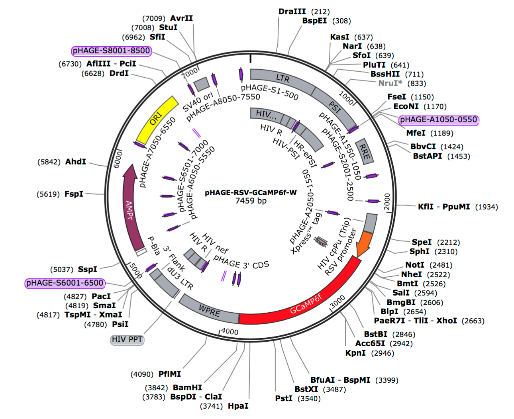
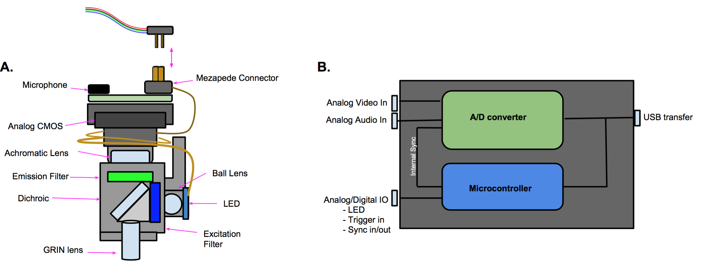

One of the major tools in modern neuroscience is the modification of specific genes to create genetically
engineered proteins. These proteins can be used to monitor or perturb the activity of discrete cell populations
in specific target areas of a model system's brain. However, while this technology is well established in some model
systems such as rodents and drosophila, songbirds have not had quiet the same molecular engineering renaissance, due
in large part to the lack of effective viruses. Together with my brother at the Center for Regenerative Medicine article
Boston University's Medical Campus, we developed high-titer lentivirus that are exceptionally effective at delivering
genetic material. Most of our viral constructs use the RSV (Rua Sarcoma Virus) promoter, to drive GCaMP6, channelrhodopsin,
or GFP/mCherry.
The details of the constructs we developed can be found on the Kotton Lab Website
for RSV-GCaMP6 as well as RSV-eGFP
Miniature Microscope Design (FreedomScope)

Optical recording of neural activity in the brains of behaving animals has become an essential method in systems neuroscience.
Through the use of genetically encoded calcium indicators, the principles of learning can be studied in large ensembles of cells
at cellular resolution. An increasingly widespread and powerful method employs miniature head-mounted fluorescence microscopes to
record cellular resolution activity in freely moving animals. A variety of miniature head-mounted microscopes are available
commercially, and have been adopted by many labs, but these off-the-shelf devices currently lack a number of desirable features
such as easy modification, wireless interfacing, color sensors, and flexible real-time analysis software. This project will
consists of an open-source miniature microscope that addresses many user needs. New features already realized in our open-source
project include 3D printed housing for easy experiment-specific reconfiguration, wireless telemetry, and color CMOS sensors for
simultaneous recording of multiple fluorescent indicators. For small animals such as juvenile mice or small songbirds that cannot
carry an extra gram for the wireless transmitter, an open-source motorized commutator based on a low cost hardware and microcontrollers
provides an ultralight configuration for recording.
The details of the FreedomScope project, as they develop, are hosted on GitHub
Carbon Fibler Splaying Electrodes
Chronic neural recording in behaving animals is an essential method for studies of neural circuit function. However, stable recordings
from small, densely packed neurons remains challenging, particularly over time-scales relevant for learning. With Grigori Guitchounts,
and Jeff Markowitz, I helped develop a 16-channel electrode array consisting of carbon fibers (~5 µm diameter) individually insulated
with Parylene-C and fire-sharpened. The diameter of the array is approximately 26 µm along the full extent of the implant. These carbon
fiber arrays were tested in HVC (used as a proper name), a song motor nucleus, of singing zebra finches where individual neurons
discharge with temporally precise patterns. Previous reports of activity in this population of neurons have required the use of high
impedance electrodes on movable microdrives. Here, the carbon fiber electrodes provided stable multi-unit recordings over time-scales
of months.
The details of this project was published in the Journal Of Neural Engineering